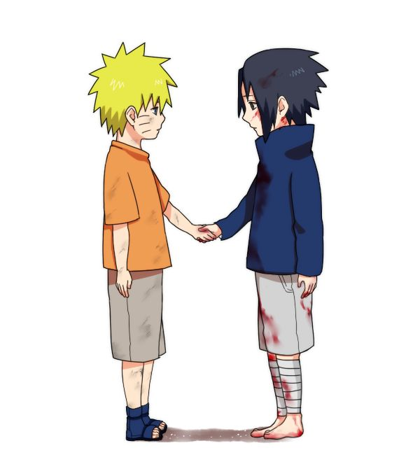
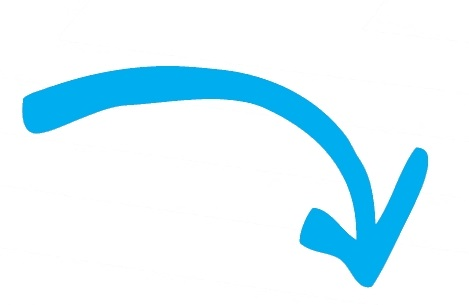

Il suffit qu’il n’y ait ni amour ni haine
Pour que la compréhension apparaisse,
Spontanément claire,
Comme la lumière du jour dans une caverne.
Aimer les autres, c’est leur conférer une haute vision d’eux-mêmes.
Aimer les autres,c’est les encourager dans le cheminement qui
leur est propre.
L’encouragement sincère se communique autant par
la parole que par les yeux.

Choisis pour amis des personnes qui te soutiennent et t’encourage.
Neuf dixièmes de l’éducation sont des encouragements.
Anatole France
Je veux être celui qui voit la vie du bon côté
et en parle avec crédibilité. Denis St-Pierre
La parole est d’argent, le silence est d’or
et une parole d’encouragement est hors de prix.
Chaque être humain est doué de la capacité de soutenir
et d’encourager ses semblables.
Considérez chaque jour comme un cadeau du ciel.
La vie est trop courte pour être traitée autrement.
Sous la carapace de chaque individu, se cache une personne,
qui aspire à être soutenue et encouragée.

Les rayons du soleil touchent la côte
Sunrays touch the coastline
Sur le cutter montre la poussière
On the cutter shows the dust
Les longues nuits sont passées avec la rivière
Long nights are gone with the river
L'eau attend depuis assez longtemps
The water has been waiting long enough
Nous flottons sur la rivière du temps
We float on the river of time
Tenir stable, tenir stable
Hold steady, hold steady
La mer vient, appelle l'été
The sea comes, calls the summer
Forcé le froid
Forced out the cold
Ne suivez pas le changement des marées
Don't follow the change of the tides
Tenir stable, tenir stable
Hold steady, hold steady
Tempête pendant des heures et des jours pluvieux
Storm for hours and rainy days
Et toute notre vie on nous dit
And all our lives we're told
Le courant nous ramènera à la maison
The stream will take us home
Les rayons du soleil touchent la côte
Sunrays touch the coastline
Réchauffer nos pieds, montrer les reflets
Warm our feet, show the glare
Nous marchons dans le sable dans la nuit chaude
We walk through the sand in the warm night
